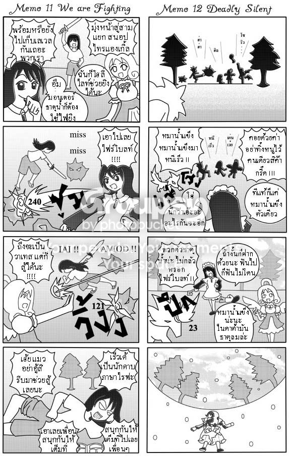
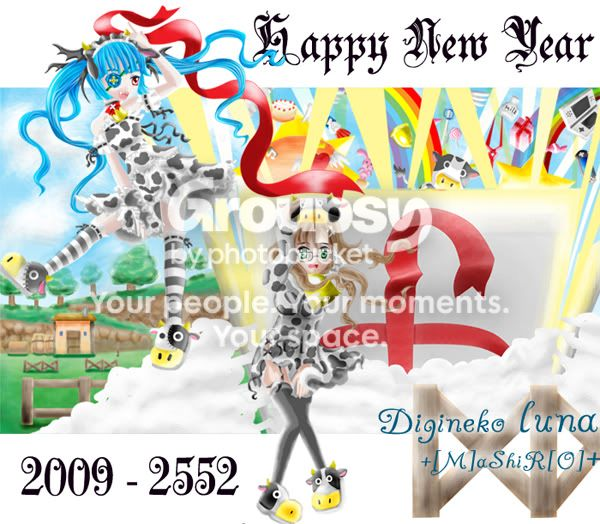
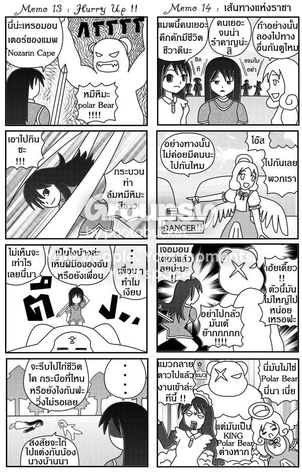

หน้า 2 จากทั้งหมด 3

โพสต์แล้ว:
ศุกร์ 19 ธ.ค. 2008 12:43 amโดย ECO
อืม ฮาใช้ได้

โพสต์แล้ว:
ศุกร์ 19 ธ.ค. 2008 8:15 pmโดย ECO
โอ้ มุกผ่านๆ 5555+
เป็นชาแมนเพราะมิโกะสุดยอด*-*b!!!

โพสต์แล้ว:
เสาร์ 20 ธ.ค. 2008 3:40 amโดย ECO
พูดยังไงดีหว่า...

ประมาณนี้แล้วกัน
"มุขในเรื่องเกิดจากเรื่องจริง โดยผ่านมุมมองของเรา ซึ่งบางทีก็มีปรับแต่งเข้าไปบ้าง"
ตัวอย่าง ตอนแรกสุด เรื่องจริงมันเป็นหนังสือคู่มือ ECO มิใช่ xxx Note

โพสต์แล้ว:
เสาร์ 20 ธ.ค. 2008 11:48 pmโดย ECO
เจอต้นเหตุบอร์ด Y ละ
มิโกะทั้งหลายแหล่นี่เอง...
เผ่นแนบบบบ
โพสต์แล้ว:
พุธ 24 ธ.ค. 2008 2:11 pmโดย ECO
เจอกิจกรรม เปิดโกเลมหาของเข้าไป ถึงกับว่างเลย...
ตอนที่ 11 กับ 12

โพสต์แล้ว:
พฤหัสฯ. 25 ธ.ค. 2008 8:33 amโดย ECO
คุคุ นอนตายคาที่เลยสินะ ...
แมวเอ๊ย คนเรามันก็เป็นงี้แหละ (55+)
โพสต์แล้ว:
พฤหัสฯ. 25 ธ.ค. 2008 12:03 pmโดย ECO
5555 ฟันวืดแถวต้านอีก อดโชว์พาวเลย
ไอ้หมาน้ำแข็งตอนแรกผมก็นึกว่าธาตุน้ำเหมือนกัน เอาไฟยิงตั้งนาน จนมีคนมาบอกว่า หมาน้ำแข็งเนี่ยจริงๆ มันธาตุลมนะ.....อึ้งไป 3 วิ
(Bau ก็เหมือนกัน เอาสายฟ้ายิงตั้งนาน ที่ไหนได้ต้องเอาดินยิงเรอะ....)
โพสต์แล้ว:
ศุกร์ 02 ม.ค. 2009 1:54 amโดย ECO
อ่านแว้วฮาอ่ะ เอิ้กกกกกก
ท่าทางนางเอกดูรันทดจังงิ -*- IAI ก้อ avoid ตีธรรมดาก้อ miss เลยปลงมานอนอ่านกาตูนใช่มะนั่น = =
โพสต์แล้ว:
ศุกร์ 02 ม.ค. 2009 7:45 pmโดย ECO
แปะ !!
ส.ค.ส.ปีวัว ประจำปี 2009

สวัสดีปีใหม่ ~

โพสต์แล้ว:
เสาร์ 10 ม.ค. 2009 2:24 pmโดย ECO
ฮาแตก
โพสต์แล้ว:
พฤหัสฯ. 15 ม.ค. 2009 9:02 pmโดย ECO
ตอนที่ 13-14


โพสต์แล้ว:
พฤหัสฯ. 15 ม.ค. 2009 9:41 pmโดย ECO
ก๊ากกก กลายเป็นดาวไปแล้ว
แหม ไม่ดูไซส์ตัวเอาซะเลย
Re: Eแมว Chronicle Online ~the Memory of MikONeKO~ UP ตอน 13
โพสต์แล้ว:
พุธ 10 พ.ย. 2010 1:53 pmโดย ECO

พี่มินนุกอะ5555+
ซีเองนะคระ > <
Re: Eแมว Chronicle Online ~the Memory of MikONeKO~ UP ตอน 13
โพสต์แล้ว:
พฤหัสฯ. 06 ม.ค. 2011 9:45 pmโดย ECO
Re: Eแมว Chronicle Online ~the Memory of MikONeKO~ UP ตอน 13
โพสต์แล้ว:
พฤหัสฯ. 13 ม.ค. 2011 3:34 pmโดย ECO
หนุก ค่ดๆ
สุโก่ย
สนุกมากครับบ
จะรออ่านนะ